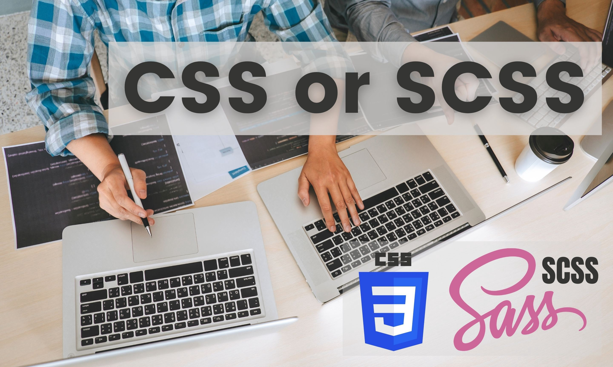

当谈及设置网页样式的时候，我们可以选择在项目中使用纯 CSS 或是 SCSS（除了其它处理器之外）。SCSS 是 CSS 的超集。大多数的开发者都认为，受益于高级的功能和清晰的语法，SCSS 使用起来比 CSS 更加方便。
在这篇文章中我想要带着大家一起探索 SCSS 的功能以及 CSS 这些年来在功能上的提升。此外，我还会评估是否可以在实际项目中用 CSS 替代 SCSS。
CSS 自诞生以来已经取得了很大的进展。近些年来 CSS 的发展也降低了在动画领域使用 JavaScript 的必要性。现代浏览器甚至使用了 GPU 去提升这些 CSS 动画的性能。我们现在甚至只需要稍微学习一下，就可以使用 CSS 构建复杂的响应式网格布局。
如今 CSS 有了许多新的功能，但本文只会重点提及一些在现代 Web 应用中常用的新功能。
我们其实可以在我们的样式表中重用一堆的颜色 color 或其他元素定义（例如字体 font）。为了做到在统一的一个地方声明这些可重用的东西，SCSS 为我们提供了变量功能，让我们能够用一个变量名表示某个颜色，并在项目的其它地方使用该变量名，而不是重写一遍颜色值。
例如下面这个例子：
$black: #000000;
$primary-font: 'Ubuntu', 'Helvetica', sans-serif;
$unit: 1rem;
body {
color: $black;
font-family: $primary-font;
padding: #{$unit * 2};
}
CSS 也支持变量和自定义属性，以下就是 CSS 中的自定义属性：
--black: #000000;
--width: 800px;
--primaryFont: 'Ubuntu', 'Helvetica', sans-serif;
body {
width: var(--width);
color: var(--black);
font-family: var(--primaryFont);
}
但是在运行时 CSS 自定义属性比 SCSS 变量更耗时。
这是因为浏览器会在运行时去处理这些属性。而 SCSS 则相反，它在预处理阶段会被转化为 CSS，并去处理变量。因此，SCSS 中变量的使用和代码的重用相比 CSS 而言有着更好的性能。
假如有下面这样的 CSS 代码块：
.header {
padding: 1rem;
border-bottom: 1px solid grey;
}
.header .nav {
list-style: none;
}
.header .nav li {
display: inline-flex;
}
.header .nav li a {
display: flex;
padding: 0.5rem;
color: red;
}
上述的代码看起来很混乱，为了给子元素添加样式，不得不重复声明同一个父元素。
但如果使用 SCSS 的嵌套语法，我们可以编写更简洁的代码。上述的代码如果用 SCSS 编写，是这样的：
.header {
padding: 1rem;
border-bottom: 1px solid grey;
.nav {
list-style: none;
li {
display: inline-flex;
a {
display: flex;
padding: 0.5rem;
color: red;
}
}
}
}
因此，与传统的 CSS 相比，使用 SCSS 设计组件似乎更加优雅而简洁。
在 SCSS 中，我们可以使用 @extend 在不同的选择器中共享相同的属性。带有占位符的 @extend 的使用方法如下所示：
%unstyled-list {
list-style: none;
margin: 0;
padding: 0;
}
%unstyled-list 是一个可以避免重复编写代码的语法糖，我们可以在不同的地方使用这个列表样式模版，例如说：
.search-results {
@extend %unstyled-list;
}
.advertisements {
@extend %unstyled-list;
}
.dashboard {
@extend %unstyled-list;
}
同样，我们可以在所有引入了这个定义的样式表中重用它。
SCSS 中还有很多例如函数、混入、循环 的功能，能让我们的前端开发更加高效。
在上文中我们探索了 CSS 现有提供的功能以及 SCSS 的功能。但是，如果将 CSS 与 SCSS 进行比较，我们会发现还有一些必要的功能无法在 CSS 中使用。
@if、@else、@each、for 和 @while 的流控制规则。作为程序员，我发现这个功能对于定义样式来说是非常有用的。这也让我们可以编写更少更简洁的代码。calc() 函数才能完成数值运算。SCSS 的数值运算还能在其兼容的单位之间进行自动转换。但是, calc() 这个 CSS 函数几乎没有限制，例如除法中除数必须是数字，或是对于乘法运算至少有一个参数是数字。
因此我认为，即使 CSS 已经诞生了很多新功能，SCSS 仍然是更好的选择。你可以在下面的评论区中谈谈你的想法。
希望你能够喜欢这篇文章。谢谢阅读！
如果发现译文存在错误或其他需要改进的地方，欢迎到 掘金翻译计划 对译文进行修改并 PR，也可获得相应奖励积分。文章开头的 本文永久链接 即为本文在 GitHub 上的 MarkDown 链接。
掘金翻译计划 是一个翻译优质互联网技术文章的社区，文章来源为 掘金 上的英文分享文章。内容覆盖 Android、iOS、前端、后端、区块链、产品、设计、人工智能等领域，想要查看更多优质译文请持续关注 掘金翻译计划、官方微博、知乎专栏。